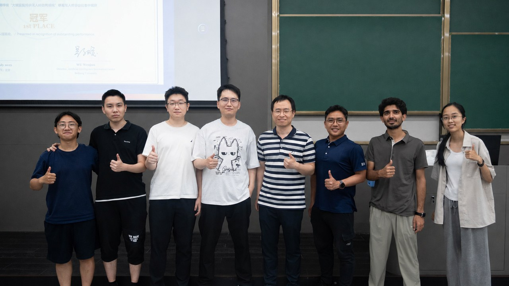

中文English
掌上无人机实验手册
本手册面向掌上无人机实验课程，内容包括环境配置、传感器使用、路径规划、cflib 编程和综合项目任务。
安全说明
涉及真实飞行的实验必须在教师或助教确认场地、设备、电池和急停流程后进行。
课程资料包
课程资料包文件夹名为 course-materials，可通过 北航网盘链接 下载，有效期至 2028-11-11 10:31。下载后请解压为 course-materials 文件夹，以便与本文档中的路径保持一致。
鸣谢
感谢课程教师和助教团队在课程准备、现场指导、安全保障和学生项目评审中的支持。

实验目录
实验 1安装配置虚拟机Virtual Machine Installation and Configuration
实验 2配置认知 ROSROS Configuration and Basic Concepts
实验 3初次配置与驱动 Crazyflie 无人机Initial Crazyflie Configuration and Operation
实验 4多向测距传感器实验Multi-ranger Sensor Experiment
实验 5测距进阶Advanced Ranging Experiment
实验 6复杂地图飞行与建图Complex-map Flight and Mapping
实验 7自主建图+复习Autonomous Mapping and Review
实验 8路径规划仿真Path-planning Simulation
实验 9cflib 库编程cflib Programming
实验 10运动控制接口进阶编程Advanced Motion Commander Programming
实验 11阶段综合实践Integrated Practice
实验 12位置控制接口实验PositionCommander